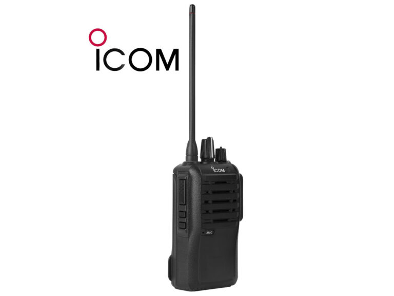
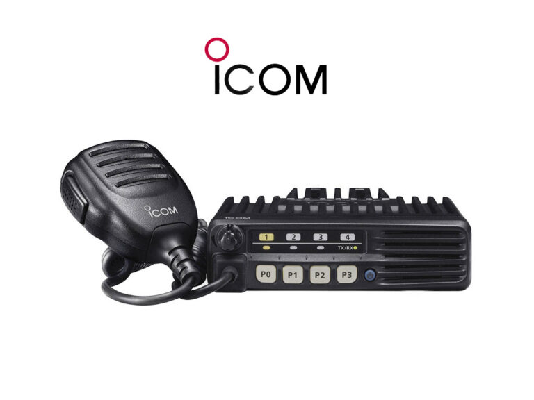
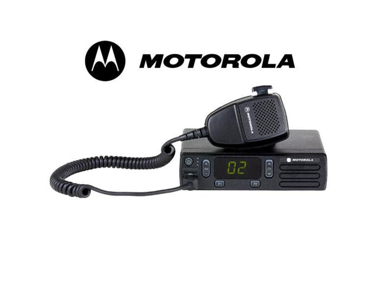
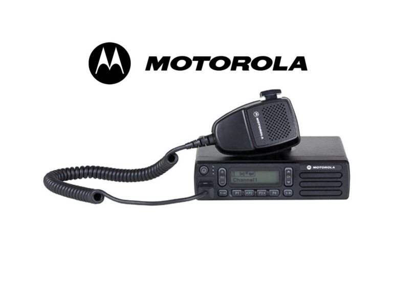
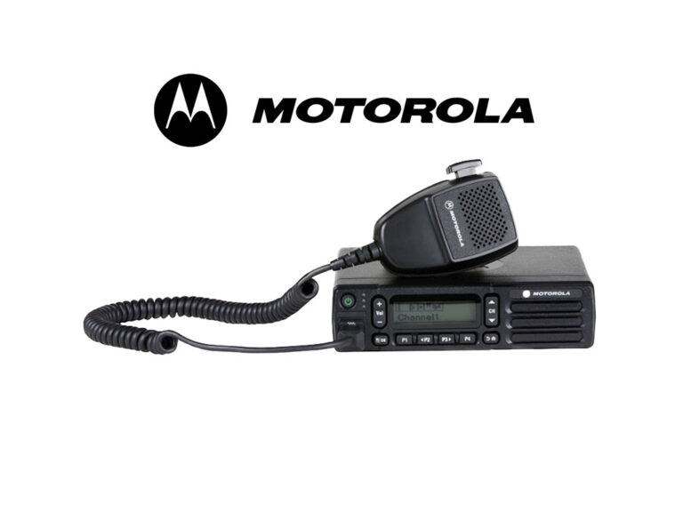
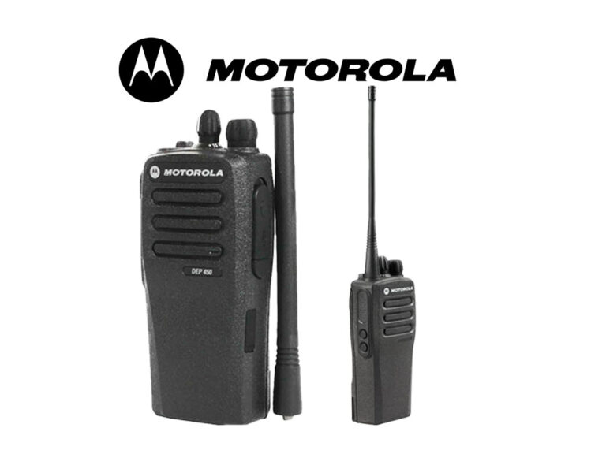
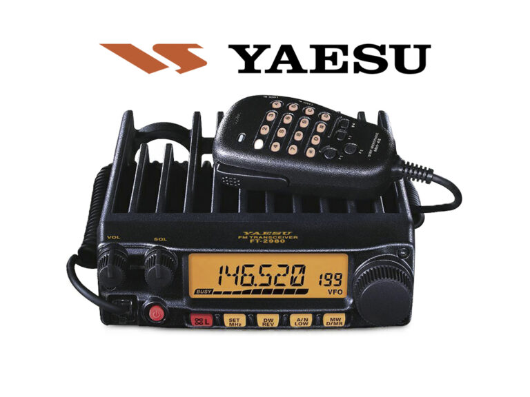

Conector PL259 UHF
Para 10mm CB Radio Antena Coaxial
- Conector de soldadura de alta calidad.
- Adecuado para cable coaxial grueso (cercano a 10 mm).
- Ideal para antenas CB o radio-aficionados.
- Construcción metálica robusta y duradera.
- Fácil de instalar y usar.
Ver más

ICOM IC-F3003
Para comunicación portátil profesional en VHF/UHF.
- Radio portátil VHF (136–174 MHz).
- 16 canales programables.
- Potencia de transmisión 5 W.
- Audio potente y claro (800 mW).
- Resistente IP54 / MIL-STD.
Ver más

ICOM IC-F5013
Para comunicación móvil en vehículos y bases VHF/UHF.
- Radio móvil VHF profesional.
- 128 canales y pantalla alfanumérica.
- Potencia de transmisión 50 W.
- Señalización CTCSS/DCS incluida.
- Construcción robusta para uso intensivo.
Ver más

ICOM IC-F5023H
Para comunicaciones móviles de alta potencia en VHF/UHF.
- Radio móvil VHF de alto rendimiento.
- 128 canales distribuidos en 8 zonas.
- Potencia de 50 W con audio de 4 W.
- Escaneo y funciones de seguridad avanzadas.
- Cumple normas MIL-STD.
Ver más

ICOM IC-V86
Para uso portátil VHF de larga distancia.
- Radio portátil VHF de 7 W.
- Audio extra fuerte de 1500 mW.
- Batería de larga duración (2250 mAh).
- Chasis reforzado y resistente IP54.
- Ideal para exteriores exigentes.
Ver más

Motorola DEM300
Para comunicación móvil analógica en vehículos.
- Radio móvil analógica compacta.
- 16 canales básicos para comunicación rápida.
- Potencia de 25–40 W según versión.
- Audio inteligente que ajusta volumen automáticamente.
- Construcción robusta para uso diario.
Ver más

Motorola DEM400
Para radios móviles MOTOTRBO en vehículos.
- Radio móvil con pantalla alfanumérica.
- 99 canales programables.
- Potencia de 25–40 W.
- Audio inteligente y fácil manejo.
- Funciones avanzadas de escaneo y señalización.
Ver más

Motorola DEM500
Para comunicación móvil digital profesional.
- Radio móvil digital/analógica (DMR).
- 128 canales y pantalla clara.
- Potencia de 45–50 W.
- Audio inteligente y funciones PTT‑ID.
- Resistente IP54 / MIL-STD.
Ver más

Motorola DEP450
Para comunicación portátil digital profesional.
- Radio portátil digital/analógica.
- 32 canales programables.
- Potencia de 4–5 W.
- Batería duradera y audio claro.
- CTCSS/DCS y funciones de seguridad.
Ver más

YAESU-FT2980
Para comunicaciones móviles VHF de alta potencia.
- Radio móvil VHF de 80 W.
- 200 canales de memoria.
- Audio potente de 3 W.
- Disipador grande sin ventilador.
- Funciones de escaneo y CTCSS/DCS.
Ver más